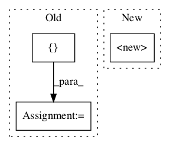

5b485693ea67e3cc1dba9f07d9e7cf6e2b70508e,deepvariant/modeling.py,,,#,1336
Before Change
return endpoints
// Our list of pre-defined models.
_MODELS = [
DeepVariantSmallModel(),
DeepVariantInceptionV3(),
DeepVariantInceptionV2(),
DeepVariantMobileNetV1(),
DeepVariantRandomGuessModel(),
DeepVariantConstantModel(),
]
def all_models():
Gets a list of the all of the known models.After Change
// of the entries here will be stratified by variant_type in eval_metric_fn.
_METRICS_FUNCS_BY_VARIANT_TYPE = {
"Accuracy": tf.metrics.accuracy,
"Precision" : tf.metrics.precision,
"Recall": tf.metrics.recall,
"FPs": tf.metrics.false_positives,
"FNs": tf.metrics.false_negatives,In pattern: SUPERPATTERN
Frequency: 3
Non-data size: 3
Instances Project Name: google/deepvariant
Commit Name: 5b485693ea67e3cc1dba9f07d9e7cf6e2b70508e
Time:
Author: null
File Name: deepvariant/modeling.py
Class Name:
Method Name:
Project Name: chuyangliu/snake
Commit Name: 7e799d025a71b84c844253e22e15cee7060975d6
Time:
Author: null
File Name: run.py
Class Name:
Method Name:
Project Name: rail-berkeley/softlearning
Commit Name: 75cba1be3373908e6a1a971778a14e40b240ce4f
Time:
Author: null
File Name: softqlearning/misc/nn.py
Class Name: MLPFunction
Method Name: __init__